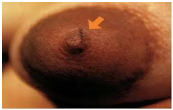

Seu mamilo está ferido, rachado, vermelho
ou inchado?
Você pode estar com FISSURAS nos mamilos.

Imagem: Ministério da Saúde
Essa dificuldade normalmente ocorre devido à pega incorreta do bebê, durante as mamadas.
Para melhorar, retorne ao ícone “Pega” e coloque seu filho corretamente no peito.
Se o peito estiver com muito leite, faça massagens e retire o excesso de leite (ícone “Ordenha”), facilitando a sucção do bebê.
O seu filho pode continuar mamando.
Não passe pomadas ou cremes. Passe o próprio
leite, é de graça e ajuda na cicatrização.
Em caso de dúvidas procure um Banco de Leite Humano, Unidade Básica de Saúde (posto de saúde), maternidade, clínicas de amamentação ou um profissional de saúde.